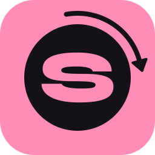

SpinSlicerOpen-source CAL slicer for Computed Axial Lithography
SpinSlicer is a free, open-source (MIT) desktop slicer for Computed Axial Lithography (CAL), also called tomographic volumetric additive manufacturing (VAM). A vial of resin turns in front of a projector, and light from hundreds of angles adds up to cure the whole part at once. SpinSlicer computes those projector frames from an STL file, shows what they will cure, and plays them on the projector for exactly the planned exposure.
What it does
- STL to projector frames. Load, place and check a part, then compute one frame per projection angle (PNG frames or MP4).
- Physical optics model. Refraction at the vial (Snell), attenuation (Beer–Lambert), Fresnel losses, the projector's pixel profile, cone of rays and the rotation during a frame.
- FastCAL engine. A round vial makes every angle optically the same, so the problem splits into small per-frequency systems; it uses all CPU cores. Square cuvettes use a SIRT path.
- Virtual print. The frames as the projector really shows them (8-bit, gamma, contrast) are turned back into dose, and the cured part is shown in 3D next to the model with its match (IoU).
- Print plan and calibration. Print time and number of turns from the resin's gel dose, absorption and projector irradiance; an exposure calibration print for a new resin.
- Projector output, ready to print. Frames placed 1:1 on the projector screen, one frame row per layer, timed by the clock, and stopped automatically when the planned dose is delivered.
Engine results
The FastCAL engine was benchmarked against OSMO, PM, BCLP and classic CAL (filtered back-projection), each planning the same jobs and all judged on a twice finer grid with an exact ray-traced operator, from 8-bit frames as a projector shows them. At grid 128 FastCAL had the best IoU and surface error on every test part; BCLP and PM kept a lead of at most 0.005 in worst-case robustness on some parts. On a 2-core 2.1 GHz machine a Benchy takes about 34 s at grid 256. Details and all numbers: engine judge report.
Who it is for
Researchers working on computed axial lithography and volumetric additive manufacturing, and makers building their own CAL / volumetric 3D printer. Every setting shows what it physically changes, and every number comes from a model of the optics.
Requirements
| Platform | Windows (installer or single .exe) and Linux x86_64 (.deb, .rpm, Arch package, portable archive) |
|---|---|
| Interface | English and Russian, day and night themes |
| Download size | about 280 MB (Windows) to 400 MB (Linux) |
| Memory | engine about 0.5 GB (Fast), 1.1 GB (Normal), 1.7 GB (Fine), plus about 0.85 GB for the window |
| License | MIT |
Memory and timings were measured on a 2-core 2.1 GHz machine with 8 GB RAM on a Benchy test part (Fast about 10 s, Normal 34 s, Fine 69 s); see the resources report.
Other CAL / VAM software
- VAMToolbox — a Python library for VAM projection optimization (OSMO, BCLP and other methods).
- OpenCAL — an open-source CAL printer with the Tomo print-preparation software.
- CAL-software-Matlab — the original MATLAB code of the CAL group.
SpinSlicer is a ready desktop application covering the whole path from STL to a running projector, rather than a library to script. Its engine was compared with OSMO, PM, BCLP and classic CAL in the engine judge report.
Questions
- What is a CAL slicer?
- In computed axial lithography there are no layers to slice: the "slicer" computes the set of light patterns projected into the rotating vial so that only the part receives enough dose to cure. SpinSlicer does this from an STL file.
- Is SpinSlicer free?
- Yes. It is open source under the MIT license, and the installers are free on the GitHub Releases page.
- Does it work with my printer?
- It targets rotating-vial CAL printers driven by a projector. You describe the vial, the immersion bath, the projector (resolution, throw ratio, gamma, irradiance) and the resin once, and SpinSlicer plans for that setup.
- How does it compare with VAMToolbox?
- VAMToolbox is a scripting library for projection optimization; SpinSlicer is an end-to-end desktop application with its own engine, a virtual print, a print plan and timed projector output.